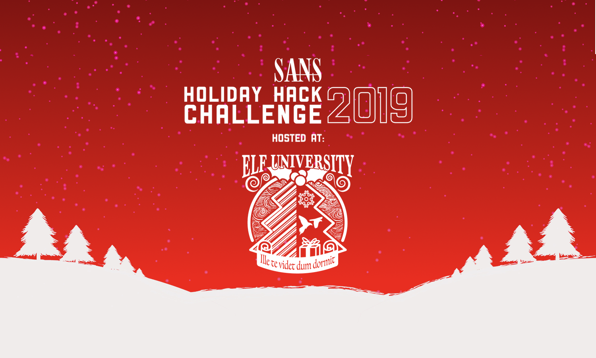
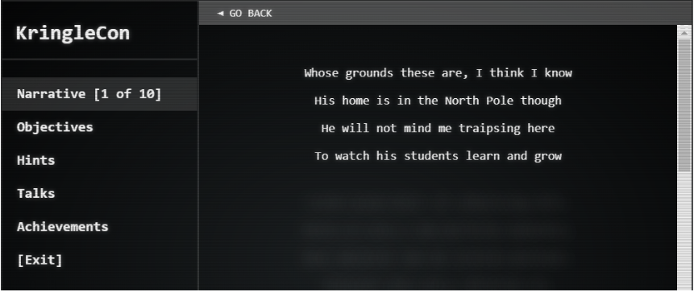
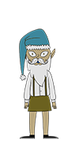
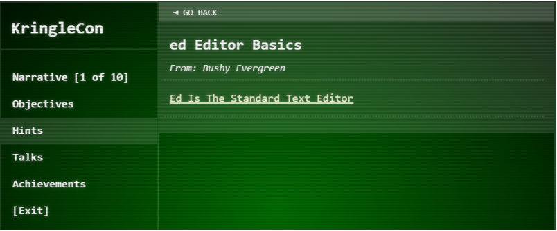
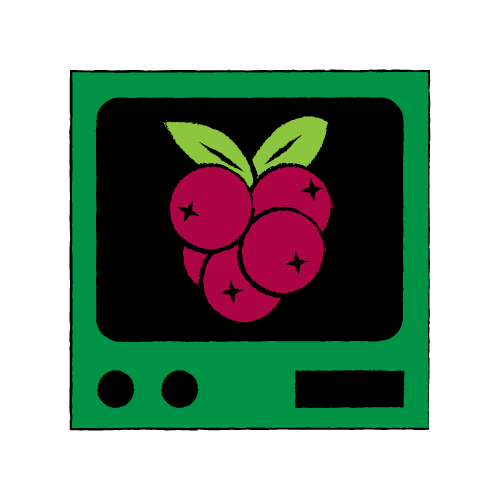
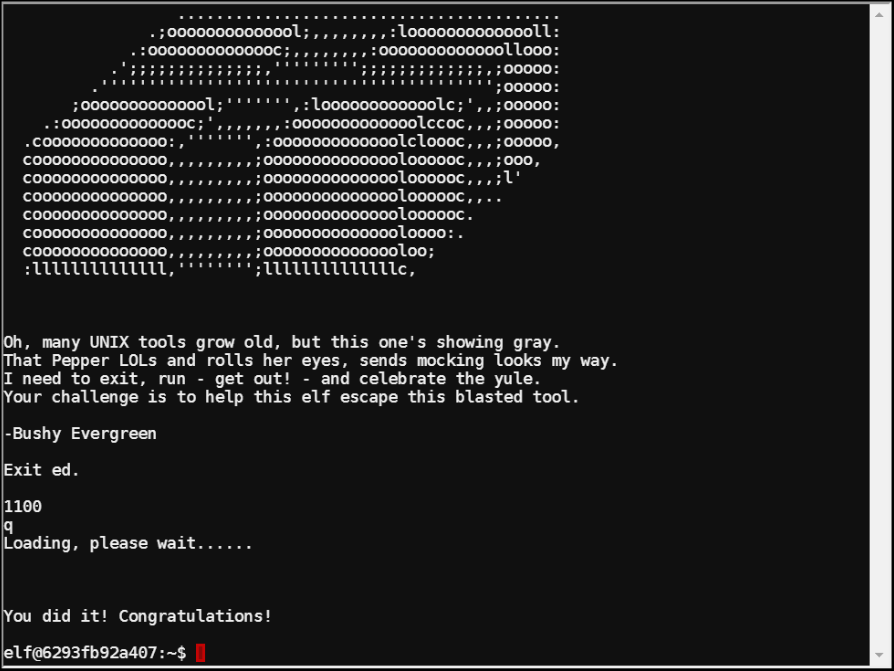
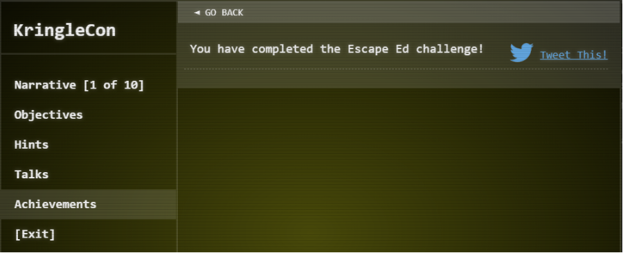
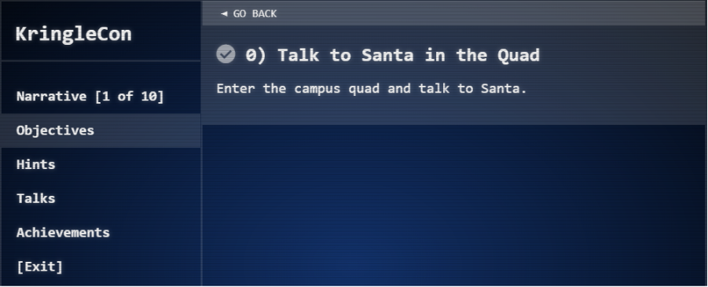

Introduction
By Dan Roberts (infosecetc)

This year's Holiday Hack Challenge brings you to Elf University, for the second virtual security conference held by Santa and his elves at the North Pole. As usual, a bad guy is attempting to ruin Christmas, and your job is to solve a series of puzzles and reveal the true mastermind behind the plot.
In addition to the capture-the-flag style computer security challenges, there are YouTube videos featuring top notch members of the infosec community discussing current security topics. The experience is as much educational as it is entertaining.
Thank you to all of the amazingly talented individuals who made Holiday Hack Challenge possible!
If you've somehow found yourself reading this without already attending KringleCon, your next stop should be the Start Here video recorded by Ed Skoudis. Then register for the event yourself, and have some fun before reading the solutions!
Getting Started
When you first sign in, you'll be greeted with some general instructions:
Welcome to KringleCon 2: Turtle Doves!
Greetings, holiday travelers! Welcome to the North Pole for KringleCon 2: Turtle Doves, Santa’s conference run in association with the SANS Holiday Hack Challenge 2019.
As you enter the North Pole and visit Elf University, make sure you stop by Santa himself along the way. After you chat with Santa in the Elf U quad, your KringleCon badge on your avatar will be populated with a series of objectives for the Holiday Hack Challenge. Just click on your badge to see your objectives.
Also, please do keep an eye on your badge for updates on the narrative and various happenings around Elf U during the con!
Here are some tips to get you exploring:
- Bounce around the environment using the mouse or the arrow keys.
- The chat bar is located on the bottom of the screen, and the pane on the right shows messages from nearby players.
- Focus the chat by pressing Enter, then typing your message.
- Send the message by pressing Enter.
- Scroll the chat pane to view the latest message.
- Use the menu at the top right to access your profile and edit your avatar, log out, hide the chat, or mute the music (who would ever want to do that?!?!).
Next, you'll find your avatar in the Elf University train station.
Note
The music in this area begins with a quote from the Walt Disney movie Mary Poppins.
"In every job that must be done, there is an element of fun. You find the fun and, SNAP, the job's a game!"
As you progress through this year's Holiday Hack Challenge, keep your eyes and ears open for additional Mary Poppins references.
Talk to Santa
The first thing to do is talk to Santa. Click on his avatar until he starts repeating himself, to ensure you've heard all he has to say.
Welcome to the North Pole and KringleCon 2!
Last year, KringleCon hosted over 17,500 attendees and my castle got a little crowded.
We moved the event to Elf University (Elf U for short), the North Pole’s largest venue.
Please feel free to explore, watch talks, and enjoy the con!
...
Santa invites you to explore and make the most of Kringlecon. He also gives you the first part of the narrative, which will be gradually revealed in your badge as you make progress in the game.

Other avatars will provide hints and direction in the game. You can find your chat history with any character by selecting the character's name from the drop-down list, which presently says "Current Area: Train Station".
Talk to Bushy Evergreen
Bushy provides a task to complete.
Hi, I'm Bushy Evergreen. Welcome to Elf U!
I'm glad you're here. I'm the target of a terrible trick.
Pepper Minstix is at it again, sticking me in a text editor.
Pepper is forcing me to learn ed.
Even the hint is ugly. Why can't I just use Gedit?
Please help me just quit the grinchy thing.
This also unlocks a Hint in your badge called "ed Editor Basics", which can help you complete the task.

Terminal: Escape from Ed
Bushy wants help quitting out of the ed text editor. Click on the Cranberry Pi icon to start the terminal challenge.

To complete this terminal challenge, simply type q and press enter. With the terminal solved, an achievement is added to your badge.

Tip from Bushy Evergreen
Wow, that was much easier than I'd thought.
Maybe I don't need a clunky GUI after all!
Have you taken a look at the password spray attack artifacts?
I'll bet that DeepBlueCLI tool is helpful.
You can check it out on GitHub.
It was written by that Eric Conrad.
He lives in Maine - not too far from here!
Another hint also appears in your badge, which will be useful later in the game.
It's time to move on to the next part of the challenge! Check your badge for your next objective.
